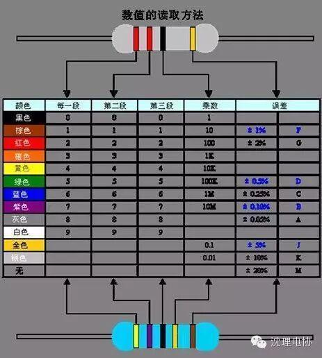
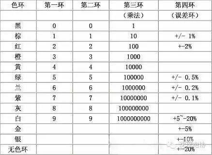

使用小程序
色环电阻是电子电路中最常用的电子元件，色环电阻就是在普通的电阻封装上涂上不一样的颜色的色环，用来区分电阻的阻值。保证在安装电阻时不管从什么方向来安装，都可以清楚的读出它的阻值。色环电阻的基本单位有：欧姆（Ω）、千欧（KΩ）、兆欧（MΩ）。1兆欧（MΩ）=1000千欧（KΩ）=1000000欧（Ω）。
平常使用的色环电阻可以分为四环和五环，通常用四环。其中四环电阻前二环为数字，第三环表示阻值倍乘的数，最后一环为误差；五环电阻前三环为数字，第四环表示阻值倍乘的数，最后一环为误差。误差通常也是金、银和棕三种颜色，金的误差为5%，银的误差为10%，棕色的误差为1%，无色的误差为20%，另外偶尔还有以绿色代笔误差的，绿色的误差为0.5%。精密电阻通常用于军事，航天等方面。

电阻色环表
有一个小口决：棕一红二橙是三，四黄五绿六为蓝，七紫八灰九对白，黑是零，金五银十表误差。
黑 | 棕 | 红 | 橙 | 黄 | 绿 | 蓝 | 紫 | 灰 | 白 | 金 | 银 |
| 0 | 1 | 2 | 3 | 4 | 5 | 6 | 7 | 8 | 9 | 5% | 10% |

关注沈理电协（微信：sylgdzxh）
每一次转发和分享都是对我们的肯定。